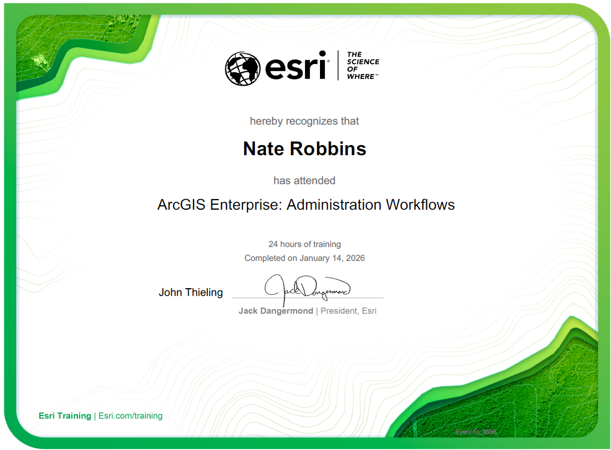

Certifications & Professional Development
Continuous learning has been an important part of my career. The geospatial industry evolves rapidly, and I enjoy staying current with emerging technologies, enterprise GIS best practices, automation techniques, cloud-based solutions, and modern application development.

GISP
Geographic Information Systems Professional (GISP)
GIS Certification Institute (GISCI)
Certification #162811

ArcGIS Enterprise Administration Workflows
Esri Technical Instructor Led Training
Demonstrates expertise in deploying, administering, and maintaining ArcGIS Enterprise environments.